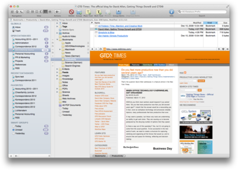

|
|
Browse the Internet |
|
Besides being a knowledge and information database, DEVONthink Pro Office acts as a web browser. This extends the document-based approach to knowledge to the World Wide Web. Because DEVONthink Pro Office is a database manager, its web browser does not work in a windowed style like Safari or DEVONagent Pro; rather, it's document-oriented.  This enables you to treat web pages the same way as you treat documents. Whenever you select a web document (bookmark), DEVONthink Pro Office immediately loads and displays its content live from the Internet in the view/edit pane. You can then archive the complete page to the database for offline viewing. DEVONthink Pro Office also handles RSS/RDF/Atom news feeds, either through feed documents or by simply displaying them via the built-in web browser. Stay up-to-date with your subject and clip important information right away. Possible uses:
Continue to read here: |